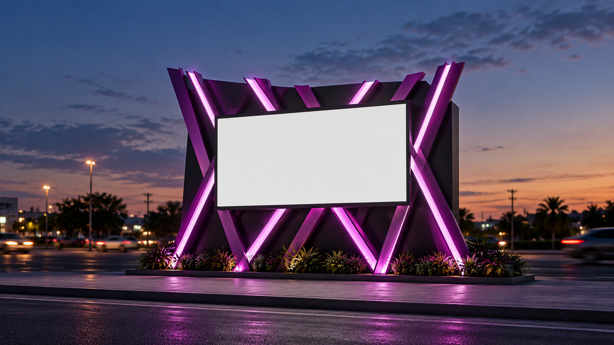
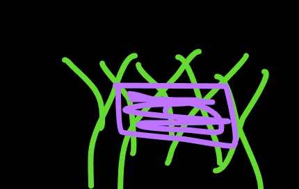
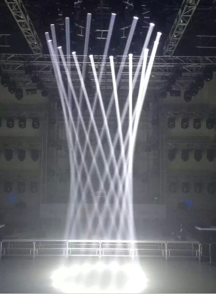
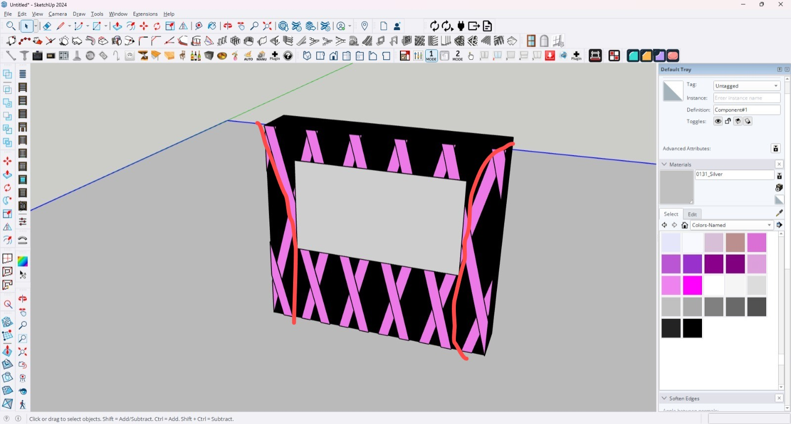

Turning the billboard into a landmark.
A sculptural architectural treatment developed to give a conventional digital billboard its own recognizable presence—without relying on the advertisement itself to make the structure memorable.

Yes, the rough sketches count.



From loose idea to controlled structure.
The final direction organizes the crossing members into a deliberate rhythm around a standard 16:9 display. A solid black support wall anchors the installation while the magenta members and selective integrated lighting carry the visual identity.
The refined system.
A standard, content-friendly proportion keeps the screen dominant and gives the overall structure a more compact composition.
A dark backing plane anchors the installation, conceals the conventional support system and gives the feature members stronger contrast.
The rods are arranged as a controlled sequence of opposing diagonals—not a random lattice—creating movement while retaining visual order.
The physical members provide colour in daylight, while selective linear illumination strengthens the roadside identity after dark.
The treatment surrounds rather than competes with the advertising surface. The message remains the primary focal point.
The visual impact comes from repetition, angle, colour and lighting rather than an unnecessarily complicated load-bearing sculpture.
The structure does not compete with the advertisement. It makes the place where the advertisement lives memorable.